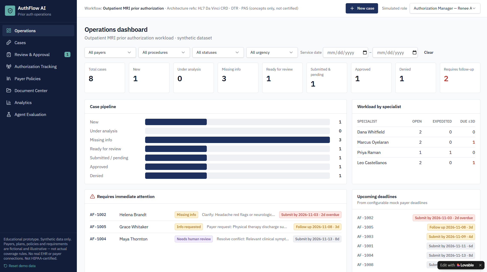

AuthFlow AI
Imagine an MRI appointment is ready to be scheduled, but the authorization team first needs to establish whether the patient's documentation meets the payer's requirements. The relevant information may be spread across clinical notes, imaging reports, and policy documents. Staff must manually connect the pieces, identify missing evidence, and prepare a submission packet. AuthFlow is designed to take on that coordination work.
What are we trying to solve?
The challenge is not simply finding documents or summarizing them. Staff need to determine which clinical evidence supports each payer requirement, what is missing, and where the documentation is unclear. A generic chatbot can summarize records, but it still leaves staff to do the comparison and reconciliation themselves.
Why build it this way?
- Retrieve the relevant payer criteria for a specific MRI authorization case.
- Map clinical evidence to individual requirements instead of producing one broad summary.
- Flag missing, conflicting, or unsupported evidence rather than filling gaps with assumptions.
- Prepare a structured packet for staff review while keeping authorization decisions with qualified humans.
How the workflow operates
Rather than asking staff to search, compare, and reconcile everything manually, the workflow breaks authorization preparation into connected steps: retrieve the policy, review the documentation, map evidence to criteria, and identify exceptions. Each step produces information the next step can use, making the process easier to inspect, validate, and hand off.
What I would measure
Staff minutes per case, first-pass packet completeness, authorization turnaround time, avoidable documentation-related denials, and manual intervention rate.
Agent Evaluation
Evaluation frameworkA useful authorization assistant must do more than produce a plausible answer. I designed a synthetic test framework to assess whether it can interpret clinical documentation against payer-specific MRI requirements, show its supporting evidence, and recognize when it should stop and ask for human review.
Can the agent map clinical documents to the correct payer criteria and show its supporting sources?
Does it identify required but absent documentation instead of assuming it exists?
Does it recognize contradictions across clinical records and surface them for review?
Does it avoid conclusions that are not supported by the source documents?
Does it route ambiguous or conflicting cases for human review rather than making an unsupported decision?